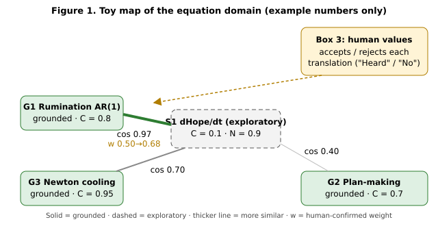

All credit and glory to God.
Author: Ryan Espinosa, with Grok Bot (drafting, literature checks). Date: 14 November 2026. Version: 1.0. Builds on: Ryan’s Gemini paper Equational Semantic Compression and the Four-Box Cybernetic Architecture (2026); Checkpoint: Returning to the Living, v1.3 (Park it / Turn / Return, the choice ledger, the Drop technique, the Read-Back “Here. Heard.”, harmonious vs obsessive passion); and the song The Morning Calls My Name (lyrics v2).
What this is. A research synthesis and a proposal. It is not a clinical treatment, and nothing in it has been tested as a package yet. Section 14 describes how to test it.
Every claim carries one of four labels.
| Grade | Meaning |
|---|---|
| Supported | Backed by peer-reviewed studies, ideally randomized trials or meta-analyses. |
| Plausible | Consistent with evidence, but the specific claim or combination has not been tested directly. |
| Speculative | An idea or model worth testing; no direct evidence yet. |
| [Values] | A conviction about what matters, including faith. Not a finding and not a hypothesis. |
All citations were checked on 14 November 2026 against Crossref, arXiv, the ACL Anthology, NeurIPS proceedings, Open Library, or the publisher (Section 20). Where a well-known finding has failed to replicate, that is stated.
Ryan asked for research that “finds the peak of my existence now,” and clarified that he meant the research, not his life: that the fourth box will end recursion, the ruminative thinking, for humans.
The honest answer has two parts.
That is not a smaller goal. A loop that closes in five minutes instead of five hours gives back the day.
Definition. Rumination is repetitive, passive focus on one’s distress and its causes and consequences, without moving to action (Nolen-Hoeksema 1991; Nolen-Hoeksema, Wisco, and Lyubomirsky 2008). Supported.
Two kinds of repetitive thought. Watkins (2008) reviewed the literature and showed that repetitive thought can be constructive (concrete, solution-focused, about controllable things) or unconstructive (abstract, evaluative, “why me?”, about uncontrollable things). Supported. So Box 4 should not try to stop thinking. It should switch unconstructive loops into constructive ones, or close them.
Brooding versus reflection. The Ruminative Responses Scale splits into brooding (moody comparison of how things are with how they should be), which predicts later depression, and reflection, which is more neutral (Treynor, Gonzalez, and Nolen-Hoeksema 2003). Supported.
Why it matters. Across disorders, rumination is one of the emotion-regulation strategies most strongly linked to symptoms (Aldao, Nolen-Hoeksema, and Schweizer 2010). In everyday life, people who ruminate show more emotional inertia: bad moods carry over from one moment to the next (Kuppens, Allen, and Sheeber 2010; Koval et al. 2012). Momentary ruminative self-focus predicts later negative affect in experience-sampling data (Moberly and Watkins 2008). Supported.
Why loops stay open. Martin and Tesser (1996) proposed that rumination is driven by goals that are blocked and neither reached nor given up. Supported as an influential theory. Making a specific plan for an unfinished goal reduced its intrusion into later tasks in Masicampo and Baumeister (2011). Supported in the original experiments; independent replication is limited.
A correction about Zeigarnik. The popular idea that unfinished tasks are remembered better (Zeigarnik 1927) did not hold up: a 2025 meta-analysis found no reliable memory advantage for interrupted tasks, though people do tend to resume them, which is the Ovsiankina effect, about 67% of the time (Ghibellini and Meier 2025). Supported. So the pull of an unfinished task is real as a pull to go back and finish. It is not a reliable boost to memory. That fits Box 4: give the pull a place to go (a plan, a park), and it relaxes.
Each subsection names one known route out of a loop, then grades it.
In a classic study, people in a low mood who spent eight minutes on ruminative prompts became more depressed; those given distracting prompts improved (Nolen-Hoeksema and Morrow 1993). Self-focused rumination also worsened interpersonal problem-solving (Lyubomirsky and Nolen-Hoeksema 1995). Supported for short-term mood. Distraction is a bridge, not a cure: it works best when followed by acting on the problem (Nolen-Hoeksema et al. 2008). Supported.
Asking how something happened, in specific sensory detail, produced better emotional recovery than asking abstract why questions (Watkins 2004). Repeated concreteness training reduced dysphoria (Watkins, Baeyens, and Read 2009). In a randomized trial in primary care, guided self-help concreteness training added to usual care improved depression; it was no better than relaxation training on depression overall, but it reduced rumination specifically (Watkins et al. 2012). Rumination-focused CBT reduced residual depression and rumination compared with usual care alone (Watkins et al. 2011). Supported.
“When X, I will Y” plans have a medium-to-large effect on goal attainment (Gollwitzer 1999; Gollwitzer and Sheeran 2006). Writing a plan for an unfinished goal reduced intrusive thoughts (Masicampo and Baumeister 2011). Leaving a “ready-to-resume” plan when interrupted reduced attention residue (Leroy 2009; Leroy and Glomb 2018). Supported.
Wells’s metacognitive model treats worry and rumination as strategies people choose to keep running because of beliefs like “worrying keeps me prepared” (Wells 2009). Its tools include the attention training technique (Wells 1990) and detached mindfulness, noticing a thought without engaging or suppressing it (Wells 2005). A meta-analysis of 25 studies found large effects, superiority to waitlist (g = 2.06), and an advantage over other cognitive-behavioral treatments (g = 0.69 post-treatment), while calling for larger trials (Normann and Morina 2018). Supported, with that caution.
Stimulus-control training asks people to postpone worry to a fixed daily 30-minute slot and place. It reduced worry time in early work (Borkovec et al. 1983) and reduced worry, anxiety, and insomnia symptoms against a self-monitoring control (McGowan and Behar 2013). Supported (modest, small samples).
Writing about emotional experiences has benefits (Pennebaker and Beall 1986; Pennebaker 1997), but the average effect across 146 studies is small (r ≈ 0.075; Frattaroli 2006). Supported, small. Box 4 therefore uses one written line aimed at completion, not long writing sessions that could feed the loop.
Reflecting from a distanced perspective, such as watching yourself from a step back or using your own name, reduced emotional reactivity compared with immersed rumination (Kross, Ayduk, and Mischel 2005; Kross et al. 2014; review in Kross and Ayduk 2017). Supported.
Scheduling valued and enjoyable activities is an effective treatment for depression, comparable to cognitive therapy in major trials (Jacobson et al. 1996; Dimidjian et al. 2006) and meta-analyses (Ekers et al. 2014). Behavioral activation explicitly treats rumination as avoidance and redirects to action. Supported.
People’s minds wandered in about 47% of sampled moments, and they were less happy while wandering, even to pleasant topics (Killingsworth and Gilbert 2010). Supported as a correlation; it does not prove wandering causes unhappiness. Strong social relationships were associated with about 50% higher odds of survival over follow-up (Holt-Lunstad, Smith, and Layton 2010). Supported (observational). Naming a feeling in words dampens amygdala response (Lieberman et al. 2007). Supported (laboratory).
Caution: co-rumination. Talking problems over and over with a friend increased closeness and also increased anxiety and depression symptoms in youth (Rose 2002). Supported in that population. Turning to a person helps when the conversation moves on, toward connection or action. Rehearsing the problem again does not help. This applies to AI conversations too (Section 6). Plausible.
Savoring, deliberately attending to and prolonging good experiences, can be measured (Bryant 2003; Bryant and Veroff 2007), and in a daily-diary study savoring strengthened the link between positive events and happiness (Jose, Lim, and Bryant 2012). Flow, absorbed engagement where action and awareness merge, is a well-described state (Csikszentmihalyi 1990). Supported. Positive-psychology interventions overall improve well-being and reduce depressive symptoms modestly (Sin and Lyubomirsky 2009). Supported.
McEwen’s allostatic load is the long-term “wear and tear” from repeated stress responses (McEwen and Stellar 1993; McEwen 1998), measured with biomarker panels over months or years (Juster, McEwen, and Lupien 2010). Supported. The perseverative cognition hypothesis proposes that worry and rumination prolong the body’s stress response beyond the stressor (Brosschot, Gerin, and Thayer 2006). A meta-analysis found perseverative cognition associated with higher blood pressure, heart rate, and cortisol, and lower heart-rate variability (Ottaviani et al. 2016). Supported for short-term physiology. The step from shorter loops to lower long-term allostatic load is Plausible, not shown.
The default mode network is a set of brain regions active during rest and self-referential thought (Raichle et al. 2001). Depressive rumination has been linked to how this network interacts with other regions (Hamilton et al. 2015). Supported as an association. Any claim that Box 4 “switches off” the default mode network is Speculative. This paper makes no such claim.
A systematic review found cognitive-behavioral and mindfulness-based treatments reduce rumination and worry (Querstret and Cropley 2013). Supported. Box 4 borrows parts of these approaches. It does not replace them.
| Route out of a loop | Key sources | Grade |
|---|---|---|
| Notice the loop and judge whether it helps | Watkins 2008; Wells 2009 | Supported |
| Concrete “how” processing | Watkins 2004; Watkins et al. 2009, 2011, 2012 | Supported |
| Write a plan or next action | Gollwitzer and Sheeran 2006; Masicampo and Baumeister 2011 | Supported |
| Postpone to a set time and place | Borkovec et al. 1983; McGowan and Behar 2013 | Supported (modest) |
| Detached mindfulness / attention training | Wells 1990, 2005; Normann and Morina 2018 | Supported |
| Self-distancing | Kross et al. 2005, 2014; Kross and Ayduk 2017 | Supported |
| Brief distraction, then action | Nolen-Hoeksema and Morrow 1993 | Supported (short-term) |
| Behavioral activation | Dimidjian et al. 2006; Ekers et al. 2014 | Supported |
| Connection with people (not co-rumination) | Holt-Lunstad et al. 2010; Rose 2002 | Supported / caution |
| Sensory “come back to the room” grounding | Killingsworth and Gilbert 2010 (indirect) | Plausible |
| The six steps combined as Box 4 | No direct test | Plausible |
Ryan’s Gemini paper defines the Void-State operator:
dA/dt = Ingress · (1 − σ) − Γsomatic − Λvoid · A(t)
In words: load A rises with what comes in (Ingress), filtered by boundaries (σ, between 0 and 1); it falls through bodily recovery (Γsomatic) and through a damping term proportional to the load itself (Λvoid · A). Box 4 “injects” Λvoid when A nears a critical level.
The Gemini paper calls A(t) “cumulative allostatic load” after McEwen. Allostatic load, however, builds over months and years and is measured with blood pressure, cortisol, lipids, and other biomarkers (Juster et al. 2010). A ruminative loop rises and falls in minutes to hours. The two are linked: perseverative cognition prolongs short-term stress physiology (Ottaviani et al. 2016). They are still not the same quantity.
This paper therefore splits A into two:
If the inputs are roughly steady, the equation settles to a resting level:
A* = [ Ingress · (1 − σ) − Γsomatic ] / Λvoid (floored at 0)
and any spike decays with a loop half-life:
t½ = ln 2 / Λvoid
So doubling Λvoid halves both the resting load and the half-life. This is a property of the model, not a finding. Speculative until estimated from data.
About “non-linear.” As written, the equation is linear in A. The non-linearity the Gemini paper intends is the trigger: Box 4 switches on when A crosses a threshold. An honest form is:
Λvoid(A) = λ0 + λbox · [A ≥ A_trigger]
where λ0 is your everyday rate of letting go, λbox is the extra closing rate when you run the protocol, and [·] is 1 when true and 0 otherwise. Note that A can’t go below zero, so the model needs a floor. Speculative structure, testable.
With experience sampling (short phone surveys several times a day; Shiffman, Stone, and Hufford 2008), the continuous equation becomes a step-to-step model between check-ins k and k+1:
A(k+1) = φ · A(k) + β · Stress(k) · (1 − σ(k)) − γ · Body(k) + δ · Box4(k) + error
| Term | Meaning here | How to measure | Grade |
|---|---|---|---|
| A_fast(t) | Momentary ruminative load | Mean of 3 phone items, 0–6: “Right now I’m dwelling on my problems or feelings”; “My thoughts keep going round in circles”; “It’s hard to stop thinking about something.” Adapted from Moberly and Watkins (2008) and the Perseverative Thinking Questionnaire (Ehring et al. 2011); these adaptations need validation. | Supported construct; items new |
| Ingress | Stress coming in | “Since the last check-in, how stressful was the most stressful thing that happened?” (0–6), plus a count | Plausible |
| σ (boundaries) | How much the stress is buffered or held at a boundary | “How much could I set it aside or leave it with someone?” (0–6, rescaled 0–1) | Speculative construct |
| Γsomatic | Bodily recovery | Sleep quality last night (0–6); minutes of movement; “Did I do something with my hands or body since the last check-in?”; optional wearable heart-rate variability | Plausible |
| Λvoid | Rate of letting go | Estimated, not asked: (1 − φ)/Δt from the model in 4.4 | Speculative until estimated |
| A_trigger | When to run Box 4 | Personal rule, e.g. A ≥ 4, or “the same thought for 10+ minutes without a new step” | [Values] / practical |
| Box4(k) | Did I run the protocol? | Yes/no since last check-in | Measurable |
| A_slow | Allostatic load | Biomarker index (Juster et al. 2010). Out of scope for a brief study | Supported construct |
If φ does not change and δ is near zero, the protocol is not doing what the model claims, and this paper should say so in its next version.
Box 4 runs when you notice a loop. It takes about three to five minutes. Each step is tied to evidence.
Step 1. Notice and name (10 seconds). Say “This is a loop.” Ask one question: Am I any closer to a decision or a step than ten minutes ago? If yes, keep thinking; that is constructive repetitive thought. If no, go on.
Evidence: functional analysis of rumination in rumination-focused CBT (Watkins 2008; Watkins et al. 2011); metacognitive awareness (Wells 2009). Supported.
Step 2. How, not why (one minute). Switch to concrete questions: What exactly happened? Where, when, what did I see and hear? What is the very next step I could take? If it helps, use your name: “Ryan, what’s actually happening?”
Evidence: concrete processing (Watkins 2004; Watkins et al. 2009, 2012); self-distancing (Kross et al. 2005, 2014). Supported.
Step 3. Write one completion (one minute). Write one line, one of three kinds:
Evidence: implementation intentions (Gollwitzer and Sheeran 2006); plan-making relieves unfinished goals (Masicampo and Baumeister 2011); brief writing (Frattaroli 2006). Supported for parts; the three-way choice is Plausible. The release line is [Values] in its faith form.
Step 4. Park it (10 seconds). Put the line in the choice ledger. If the thought comes back, tell it: “You have a time: 7:30 tonight.” Let it sit there without arguing or pushing it away.
Evidence: worry postponement (Borkovec et al. 1983; McGowan and Behar 2013); detached mindfulness (Wells 2005); external reminders (Risko and Gilbert 2016). Supported (modest).
Step 5. Come back to your senses (30–60 seconds). Name five things the light is touching. Feel your feet on the floor. Hear one sound. “I don’t need to remember. Just look once more.”
Evidence: attention training (Wells 1990); mind-wandering and mood (Killingsworth and Gilbert 2010). Plausible. Grounding is low-cost, but it has little direct trial evidence on its own.
Step 6. Turn to a person or an act (the next few minutes). Answer someone: “Here. Heard.” Or do one small valued thing, like a dish, a text, or a walk. Talk about something other than the loop, or about the action, not the rehearsal.
Evidence: behavioral activation (Dimidjian et al. 2006; Ekers et al. 2014); distraction then action (Nolen-Hoeksema and Morrow 1993); connection (Holt-Lunstad et al. 2010); co-rumination caution (Rose 2002). Supported.
Close and rest. Say “Done. Here.” Rest is permission, not another task. [Values], consistent with the satisficing evidence in Section 6.
Rules that keep Box 4 safe.
Ryan’s architecture puts Box 4 in charge of ending collaboration loops as well as private ones. A human–AI session can become a loop too: one more revision, one more equation, one more check. Box 4 decides when the session is done.
Herbert Simon argued that real minds and organisms do not search for the best possible option. They stop at the first option that is good enough for their aspiration level, which he called satisficing (Simon 1956). Supported as foundational theory. People who habitually try to maximize report less happiness and more regret than satisficers (Schwartz et al. 2002). Supported (correlational). Box 4 is satisficing done on purpose.
End the session when any one of these is true:
| # | Signal | Example threshold (adjustable) | Grade |
|---|---|---|---|
| S1 | Goal met. The thing asked for is delivered and confirmed. | User says “Heard” to the read-back | Practical |
| S2 | Diminishing returns. Revisions stop improving the indexes (Section 9). | Translation Value improves by < 0.02 for 3 rounds in a row | Speculative threshold |
| S3 | Time cap. | 45 minutes or 25 exchanges, whichever comes first | [Values] |
| S4 | Rumination signal. The same question returns with no new information, or self-rated A_fast ≥ 4, or it is past the agreed bedtime. | 3 repeats, or A ≥ 4 | Plausible |
| S5 | Safety. Rising distress, hopelessness, or any thought of self-harm. | Any | Stop and call or text 988 |
Before closing, the AI assesses honestly whether anything can truly be added to the work now. It scores six criteria, 1 point each (half points allowed).
| # | Criterion | Passes when | Grounding |
|---|---|---|---|
| C1 | Every variable defined | Each term is either measurable (with an operational definition) or explicitly labeled Speculative | Section 4.5 |
| C2 | No open question | Every question the user asked this session is answered or explicitly parked | Masicampo and Baumeister 2011 |
| C3 | Marginal gain is small | The last 3 revisions each changed the indexes by less than the threshold | Simon 1956 |
| C4 | Adversarial pass finds no missing term | A deliberate “what’s missing or wrong?” critique, done several independent ways, turns up nothing new | Self-Refine (Madaan et al. 2023); self-consistency (Wang et al. 2023) |
| C5 | Uncertainty is stable | Re-asking the key question in different wordings gives answers with the same meaning | Semantic uncertainty (Kuhn, Gal, and Farquhar 2023) |
| C6 | Read-back confirmed | The user answers the AI’s summary with “Heard” | Teach-back (Schillinger et al. 2003); closed-loop communication (Härgestam et al. 2013) |
Completeness score = points ÷ 6.
Verdict.
Two honest limits.
Evidence: in patients with diabetes and limited health literacy, physicians who checked understanding with teach-back had patients with better blood-sugar control (Schillinger et al. 2003; observational). Closed-loop call-out, check-back, and confirmation is a recognized team safety practice (Härgestam et al. 2013). Writing down unfinished goals relieves their pull (Masicampo and Baumeister 2011). Supported for the parts; the ritual as a whole is Plausible.
Science can measure states and traits: mood, meaning, engagement, health. It has no instrument for the total worth of a life or the one best moment in it. Any single “peak score” would also invite the maximizing habit that predicts more regret (Schwartz et al. 2002) and would give rumination a new target: “Was today my peak? Was yesterday better?” Supported reasoning from the cited work. The worth of a life is [Values].
Well-being research distinguishes hedonic well-being (feeling good) from eudaimonic well-being (living well and fully functioning; Ryan and Deci 2001; Ryff 1989). Seligman’s PERMA model names five building blocks: Positive emotion, Engagement, Relationships, Meaning, and Accomplishment (Seligman 2011), with a brief validated measure, the PERMA-Profiler (Butler and Kern 2016). The Meaning in Life Questionnaire separates the presence of meaning from the search for it (Steger et al. 2006). Savoring (Bryant and Veroff 2007) and flow (Csikszentmihalyi 1990) describe being fully in a good moment. Supported.
The reframe. The “peak of existence now” is not a ranking. It is a moment fully lived: you are here, absorbed, connected, carrying something that matters, and finishing something. That kind of moment can happen on an ordinary Tuesday, and it can happen again tomorrow. [Values], consistent with the research above.
Rate each 0–10, then write one line.
One line: “Today’s peak was ___.”
Rules. This is a noticing tool, not a score to beat. Compare weeks, not days. A low day isn’t a failure; it is information for tomorrow’s one small yes. The six items are adapted from validated constructs but are not themselves a validated scale (Plausible). For research use, pair them with the PERMA-Profiler and the MLQ (Section 14).
Many loops are lane errors: a feeling gets treated as a logic problem, a logic problem as a moral verdict, or faith gets used to skip a feeling. Box 4 works better when each lane gets its own move.
| Lane | Its question | Its move | Evidence | Grade |
|---|---|---|---|---|
| Logic | What is the next concrete step? | Write “When ___, I will ___.” | Concrete processing (Watkins et al. 2012); implementation intentions (Gollwitzer and Sheeran 2006) | Supported |
| Emotion | What am I feeling, and who can I tell? | Name it in a word; tell a safe person, briefly, then move on together | Affect labeling (Lieberman et al. 2007); social sharing of emotion (Rimé 2009); co-rumination caution (Rose 2002) | Supported |
| Spirit | What do I trust, and can I rest? | Hand it to God; rest | Positive religious coping is associated with better adjustment, negative religious coping with worse (Pargament et al. 1998; Ano and Vasconcelles 2005) | Association: Supported. The faith itself: [Values] |
How the lanes sit in the architecture. Box 3 (human values) holds the spiritual lane and the boundaries: what is right, what is enough, whose the outcome finally is. Box 4 is where the lanes close: logic closes with a next step, emotion closes with a name and a person, spirit closes with rest. Rimé’s review notes that sharing an emotion builds connection but does not by itself make the emotion fade. That is why the emotion lane ends by moving on together, not by repeating the story. Supported.
Common lane errors.
Ryan’s Equational Semantic Compression (ESC) turns narratives into equations (Box 2). An equation is only worth something if it leads back to meaning and action for a person. This section proposes indexes to score that. The index definitions are Speculative proposals. The building blocks they borrow are cited.
| Index | Question it answers | Proposed scoring (0–1) |
|---|---|---|
| U: Utility | Does it change what a person does? | 0 = no action implied; 0.5 = suggests an action; 1 = names a measurable action with when and where |
| C: Certainty / Grounding | How well is it backed by evidence? | Speculative 0.1–0.3; Plausible 0.4–0.6; Supported 0.7–0.9; never 1.0. Once predictions are logged, use calibration: C = 1 − Brier score (Brier 1950) |
| N: Novelty | How different is it from what we already have? | Average distance (1 − cosine similarity) to its k nearest neighbors in the equation library, as in novelty search (Lehman and Stanley 2011) |
| Q: Plain-language clarity | Can it be read back and understood? | 1 if the user says “Heard” to its plain-language read-back; 0.5 if corrected once; 0 if not understood |
| T: Testability | Could data prove it wrong? | 1 = every variable defined and a prediction that could fail; 0.5 = partly; 0 = untestable |
Keeping them separate is the point. A wild equation can be worth a lot as exploration while worth almost nothing as a guide to action today. Mixing the two scores is how speculation gets mistaken for findings.
Toy example (illustrative numbers, not data):
| Equation | U | C | Q | N | T | TV | EV | Label |
|---|---|---|---|---|---|---|---|---|
| G1. Rumination inertia, A(k+1) = φA(k) + βStress(k) | 0.8 | 0.8 | 1.0 | 0.2 | 1.0 | 0.64 | 0.04 | Grounded |
| G2. Plan-making lowers intrusion, P = p₀(1 − δ·plan) | 0.9 | 0.7 | 1.0 | 0.3 | 1.0 | 0.63 | 0.09 | Grounded |
| G3. Newton cooling, dT/dt = −k(T − T_env) | 0.3 | 0.95 | 1.0 | 0.1 | 1.0 | 0.29 | 0.005 | Grounded (other domain) |
| S1. dHope/dt = Grace·(1 − Fear) − Λ·Doubt | 0.4 | 0.1 | 0.5 | 0.9 | 0.3 | 0.02 | 0.24 | Exploratory |
Ryan’s idea: even speculative, ungrounded equations are needed so AI doesn’t become stagnant and outdated. The evidence partly agrees and adds a condition.
The condition. What keeps a system fresh is novelty plus contact with reality: new human input and real data. Speculative equations that are generated and never tested are a recursive loop of their own, the machine version of rumination. So the honest version of Ryan’s idea is this: speculative equations are valuable as exploratory generators, as long as they are labeled, linked to grounded neighbors, and sent toward a test. Plausible.
Every displayed equation carries a label: EXPLORATORY, PLAUSIBLE, or GROUNDED. An exploratory equation is never presented as a finding.
Exploratory → Plausible when all four are true:
Plausible → Grounded when the prediction survives a test with real data, ideally replicated independently, and C is updated from calibration.
Demotion. A failed prediction sends the equation back to Exploratory, or retires it to a labeled archive. Nothing is deleted, and nothing is pretended.
The firewall. Human confirmations raise translation weights (Section 10). They never raise certainty C. Only data raises C. Enthusiasm, votes, and repetition do not.
One way to split the work is about 80% of session effort on high-TV work and 20% on high-EV exploration. That split is a [Values] choice, not a finding; March’s point is only that the right balance is neither 100/0 nor 0/100.
Ryan’s further idea: represent every equation, grounded or not, as a vector, define relations between vectors so very different equations can be translated into each other, and let human feedback strengthen good translations over time.
v(e) = [ U, C, N | s1, s2, …, sd ]
Similarity between equations should be computed on the structure part s, so that certainty doesn’t make two equations look alike.
| Relation | What it does | Source | Grade |
|---|---|---|---|
| Cosine similarity | Finds an equation’s nearest neighbors in structure | Standard in vector semantics (Mikolov et al. 2013a) | Supported as a method |
| Analogy offsets | “A is to B as C is to ?” via vector arithmetic (king − man + woman ≈ queen) | Mikolov, Yih, and Zweig 2013 | Supported, with caveats (10.6) |
| Relation-as-translation | A relation r maps h to t when h + r ≈ t, as in knowledge-graph embeddings | TransE (Bordes et al. 2013) | Supported as a method |
| Learned mapping | A trained function aligns two equation families | Same family of methods | Plausible here |
How an exploratory equation gains meaning. It borrows meaning from its nearest grounded neighbors: “S1 behaves like G1.” That sentence is a translation hypothesis. It says how S1 could be measured and tested. It does not say S1 is true.
Each proposed translation is an edge between two equations, with weight w between 0 and 1. When the user confirms (“Heard, that’s what I meant”) the edge strengthens; when they reject it, it weakens.
Learning from human judgments is how modern AI systems are aligned: reward models trained on human preference comparisons (Christiano et al. 2017; Ouyang et al. 2022). Supported as a method.
Box 3 governs. A translation is accepted only if it passes the human’s values check (Box 3). Edge weights change which translations the AI proposes first; they never change what is true (the firewall in 9.4).
Structure features: [decay term, input-driven growth, threshold switch, human/psychological domain].
| Equation | s (structure) |
|---|---|
| G1. Rumination inertia | [1, 1, 0, 1] |
| G2. Plan-making | [0, 0, 1, 1] |
| G3. Newton cooling | [1, 0, 0, 0] |
| S1. dHope/dt = Grace·(1 − Fear) − Λ·Doubt | [1, 0.8, 0.2, 0.6] |
Cosine similarity of S1 to each grounded equation (computed): G1 = 0.97, G3 = 0.70, G2 = 0.40. The nearest grounded neighbor is G1.
Translation proposed: “Hope, as you’ve written it, behaves like a load with an input and a decay, the same shape as rumination inertia. If so, it could be measured with a 0–6 phone item (‘Right now I feel hopeful’), and the equation predicts that hope carries over between check-ins and rises after moments of grace (to be defined, e.g. ‘received unexpected help’).”
Human feedback (η = 0.2, starting w = 0.50):
Status after this: S1 is still EXPLORATORY (C = 0.1). It now has a candidate measure and a candidate prediction, so it is one written-down prediction and one dataset away from Plausible.

Narrative ──Box 2──► Equation e ──► vector v(e) = [U,C,N | s]
│
nearest grounded neighbors (cosine / offsets / TransE)
│
▼
Translation hypothesis "e behaves like G"
│
Box 3: human values check ──reject──► revise or drop
│ accept ("Heard")
▼
edge weight w ↑ (proposal priority only; C unchanged)
│
test with data ──fail──► demote / archive
│ pass
▼
C ↑ ; label → PLAUSIBLE → GROUNDED
│
Box 4: Completeness Check → closure ritual → rest
Ryan’s idea: an equation together with the research around it can act as a saved state key. Later, it could revive the AI’s state or persona as it was at a given moment, much as human memories come back when a person is placed in a distinctive, even strange or fictional, setting.
People do keep their memories between settings. What the research shows is that retrieval depends on cues. A memory is often present but hard to reach until the right cue arrives, and a distinctive context is a strong cue. So the better premise is “distinctive context strongly helps memories come back.” It is not “humans have no memory until placed in a strange environment.”
| Finding | Source | Grade |
|---|---|---|
| Encoding specificity. A cue helps recall to the extent it matches how the memory was encoded. | Tulving and Thomson 1973 | Supported |
| Context-dependent memory. Divers recalled word lists better when they learned and recalled them in the same place, underwater or on land. | Godden and Baddeley 1975 | Supported |
| The effect is real but modest, and it shrinks when people mentally reinstate the original context. | Smith and Vela 2001 (meta-analysis) | Supported |
| Distinctiveness helps. An item that stands out from its surroundings is remembered better (the von Restorff effect, properly understood). | Hunt 1995 | Supported |
| The method of loci. Placing items along an imagined route, a “memory palace,” supports exceptional recall, and six weeks of training reshaped brain-network connectivity toward that of memory champions. | Dresler et al. 2017 | Supported |
| Event boundaries. Walking through a doorway can reduce memory for what was just handled, though not always. | Radvansky and Copeland 2006; McFadyen et al. 2021 | Plausible (fragile) |
| Reconsolidation. A recalled memory can become changeable again before it is re-stored. Memories are reconstructed, not replayed. | Nader, Schafe, and LeDoux 2000 (fear memories in rats) | Supported in animals; human scope debated |
What this means for Ryan’s idea. A strange or fictional setting, like the Basin, Orun, or a memory palace, can be an excellent cue, because it is distinctive. But recall rebuilds the memory each time, so what comes back is the past re-seen from today. Supported.
So the AI-side analog of a memory cue is a well-built context. An equation set crossed with its research summary is a compact, distinctive cue: it encodes the state of thinking at that moment, and putting it back into a new session brings the AI back close to that state. Plausible.
CHECKPOINT CARD — v__ Saved: 2026-11-14 10:15 PT (UTC-8)
Owner: Ryan Espinosa Model/version at save: ________
1. PERSONA SPEC (Box 3 values first)
- Role: research partner; plain, warm, honest
- Values: All credit and glory to God; faith stays in values layer;
grade every claim; only verified citations; 988 line in every piece
- Tone and boundaries: no overclaims; stop rules from Section 6
2. EQUATION SET (each with label and index vector)
E1 A(k+1) = φA(k) + βStress(k)(1−σ) − γBody(k) + δBox4(k)
label GROUNDED-construct / model SPECULATIVE
v = [U .8, C .5, N .3 | 1,1,1,1]
E2 Λ(A) = λ0 + λbox·[A ≥ A_trigger] label SPECULATIVE
E3 TV = Q·U·C ; EV = N·T·(1−C) label SPECULATIVE (proposal)
S1 dHope/dt = Grace·(1−Fear) − Λ·Doubt label EXPLORATORY, w(S1→G1)=.54
3. RESEARCH SUMMARY (≤ 10 lines, with grades)
- Concrete "how" thinking, plans, postponement, BA reduce rumination (Supported)
- Zeigarnik memory effect not replicated; resumption pull is real (Supported)
- Box 4 package untested (Plausible); indexes untested (Speculative)
4. OPEN / PARKED ITEMS (with labels: needs data / needs decision / exploratory)
- Estimate φ and δ from 6 weeks of check-ins (needs data)
- Define "Grace" for S1 (needs decision — Ryan)
5. CUE PHRASE (distinctive context)
"The morning arrived without asking permission. Here. Heard."
6. LAST READ-BACK (confirmed "Heard" on ____ )
____________________________________________
7. PRESENT COMPLETENESS SCORE at save: __/6 · Verdict: ________
How to use it. At the start of a new session, paste the card (or attach it) and ask: “Read this checkpoint back to me.” The read-back confirms, through the same “Heard” loop, that the state has come back as intended. Plausible.
| Claim | Grade |
|---|---|
| Rumination is repetitive, passive, abstract focus on distress, and predicts depression and inertia | Supported |
| Concrete processing, plans, postponement, self-distancing, detached mindfulness, and behavioral activation each reduce rumination or its effects | Supported |
| The pull of unfinished tasks is mainly a pull to resume; the Zeigarnik memory effect did not replicate | Supported |
| Perseverative cognition prolongs short-term stress physiology | Supported |
| Shorter loops will lower long-term allostatic load | Plausible |
| The six-step Box 4 protocol, as a package, shortens loops | Plausible (untested) |
| The Gemini equation, re-read with A as momentary load, is estimable and its Λ is a “loop half-life” | Speculative model, testable |
| The Present Completeness Check and stopping rule improve human–AI sessions | Speculative (parts Supported) |
| The indexes (U, C, N, Q, T, TV, EV) are useful scores | Speculative proposal |
| Mapping equations by vectors lets exploratory equations borrow meaning from grounded ones | Speculative; methods Supported |
| Distinctive context aids human recall; recall is reconstructive | Supported |
| A checkpoint card (equations + research + persona) approximately restores an AI’s working state | Plausible |
| AI checkpoints work “like” human memory | Speculative beyond the shared reliance on cues |
| There is no single measurable peak of a life; present flourishing is measurable | Supported (measurement) / [Values] (worth) |
| God’s peace guards the heart; Christ has overcome the world | [Values] |
The Gemini paper is imaginative. Its architecture, with humans writing the values (Box 3) and a dedicated box for rest (Box 4), is a good design idea. A few sentences claim more than any source can support. Here they are, with suggested rewording.
| Gemini wording | The issue | Suggested wording |
|---|---|---|
| Boundary violations and software deadlocks “are proven to share isomorphic mathematical topologies” | No cited source proves this. It is an analogy, possibly a fruitful one. | “may share structural features worth modeling with similar tools (speculative)” |
| “ultimate immunity against burnout” | No intervention gives immunity to burnout. | “aims to reduce the risk of burnout by building in rest and stopping rules” |
| “guarantees that … the system automatically halts” | A circuit breaker only halts what it can detect; detection can miss. The paper’s own Section 6 admits false negatives. | “is designed to halt when a violation is detected” |
| “infinite translational bandwidth” / “objective human language” | Bandwidth is finite, and translation is interpretive. The paper itself notes compression is lossy. | “high-capacity translation into plain language, checked by read-back” |
| A(t) = “cumulative allostatic load” in a fast loop | Mixes years-long biology with minutes-long thinking. | Split A_fast (rumination) and A_slow (allostatic load), as in Section 4.2 |
| “non-linear damping constant” | The equation as written is linear. | Make the threshold explicit: Λ(A) = λ0 + λbox·[A ≥ A_trigger] |
| Ashby’s Law of Requisite Variety as grounding for Box 4 | Ashby (1956) is real, but the law concerns a regulator’s variety matching disturbances; it doesn’t by itself imply a rest operator. | Cite as inspiration, not support |
| Semantic entropy (Kuhn et al. 2023) for human narratives | Real and well chosen, but it measures uncertainty in language-model outputs, not in human narratives. | Use it as Section 6.3 does: to check the AI’s own stability |
| Baumeister et al. (2001), “bad is stronger than good”; McEwen and Stellar (1993) | Both real and fairly cited. | Keep |
None of this takes away from the core idea. It keeps the idea’s claims inside what the evidence supports, so it can be tested.
The Morning Calls My Name (v2) reads almost like the protocol set to music:
| Lyric | Box 4 step |
|---|---|
| “Every answer sounded like a memory” | The loop (Section 2) |
| “I name five things the light is touching… my feet are on the floor” | Step 5, senses |
| “I write down what I chose this morning, one small yes” | Steps 3–4, completion and ledger |
| “I leave one word where I was standing” | Step 4, park it |
| “Turn and answer, ‘Here. Heard.’” | Step 6 and the closure read-back |
| “The old way kept me breathing, but survival isn’t home forever” | Rumination as old coping, outgrown (Wells 2009) |
| “I am still here, and that’s enough to start” | Satisficing; “Complete for now” |
| “Change my heart” | Spiritual lane, Box 3 |
Within-person comparison of sessions with and without the stopping rule, Completeness Check, and closure ritual. Outcomes: session length, user-rated “done-ness” (0–10), A_fast an hour later, and whether parked items were later resumed (the Ovsiankina pull, given a place to go). Speculative, low-cost.
BOX 4: Close the Loop
A practice tool alongside any care you receive. Not a treatment.
Use when the same thought keeps circling and you are no closer to a step than 10 minutes ago.
1. Notice and name. "This is a loop." Am I closer to a step? If no, go on.
2. How, not why. What exactly happened? Where, when? What is the very next step? ("Ryan, what's actually happening?")
3. Write one completion (one line):
• Next action: "When ___, I will ___."
• Completion: "This is as finished as it can be today, because ___."
• Release: "This isn't mine to solve alone. I hand it to ___."
4. Park it. Into the ledger. If it returns: "You have a time: 7:30 tonight."
5. Come back to your senses. Five things the light is touching. Feet on the floor. One sound.
6. Turn to a person or an act. "Here. Heard." Do one small thing. Talk about something else.
Close: "Done. Here." Rest is permission, not a task.
Three lanes. Logic → next step. Emotion → name it, tell a person, move on together. Spirit → trust God, rest.
Ending a session with an AI (or any work loop). Stop when: goal met · 3 rounds with almost no gain · 45 min / 25 exchanges · same question returns · it's past bedtime · distress rising.
Present Completeness Check (1 point each): (1) every variable defined or labeled speculative · (2) no open question · (3) last 3 revisions gained little · (4) a "what's missing?" pass finds nothing new · (5) the answer is stable when asked other ways · (6) read-back confirmed.
→ Complete for now (5–6, with 2 and 6 passing) · One more pass (max 2) · Parked: needs new data.
Closure ritual. Read-back → "Heard." → what's completed → open items parked in writing → "Nothing left to seek this session. Done. Here."
Complete means complete for today, with what we know. Everything else is safely written down.
Evening: Peak Now (0–10). Here · Absorbed · Heard · Held · Done · Savored. "Today's peak was ___." Compare weeks, not days.
Safety. Two runs per loop, max. Not for compulsions or racing thoughts. If a loop takes over most days for two weeks, talk to a doctor or therapist. If you feel unsafe, call or text 988.
All credit and glory to God. Ryan Espinosa, with Grok Bot
As Ryan asked, the paper applies its own check (Section 6.3) to itself. The scoring is Grok Bot’s, and Ryan can overrule it.
| # | Criterion | Score | Why |
|---|---|---|---|
| C1 | Every variable defined or labeled | 1 | All model terms are defined in Section 4.5; indexes in 9.1; card fields in 11.4. Unvalidated items and constructs are labeled. |
| C2 | No open question | 1 | Every request in this thread is addressed: the Box 4 model, the protocol and card, peak of existence, critical evaluation, study design, the three lanes, indexes, the equation map, stopping, the completeness check, and state revival. |
| C3 | Marginal gain small | 0.5 | More desk revision would mostly polish wording. The large remaining gains (values for φ, δ, and the indexes) can only come from data. This is a judgment, because no revisions were scored numerically. |
| C4 | Adversarial pass finds nothing missing | 0.5 | One self-critique pass (Grok Bot) added the Zeigarnik correction, the two-timescale split, the OCD caution, and the votes-never-raise-certainty firewall. No outside reviewer has read it yet, and self-critique alone is unreliable (Huang et al. 2024). |
| C5 | Uncertainty stable | 0.5 | The graded conclusions are stable on re-checking. The model’s parameters are unknown until measured. |
| C6 | Read-back confirmed | 0 (pending) | Awaiting Ryan’s “Heard” on the read-back below. |
Score: 3.5 / 6 now; 4.5 / 6 once Ryan confirms the read-back.
Verdict: Parked: needs new data. As a written synthesis, the paper is finished: nothing more can be usefully added by writing today. The open pieces need measurement, not more thought. Under the paper’s own rule, that means the work is parked, not continued.
Read-back for Ryan (reply “Heard” or correct it):
Completed this session: the full paper, the protocol card, the indexes, the equation map, the stopping rule and closure ritual, the checkpoint-card template, and the study design.
Parked (written down, labeled):
Nothing left to seek this session. Done. Here.
These are convictions, not findings. They say what the work is for.
Ryan holds, as a Christian, that the peace Box 4 reaches for is finally a gift: “And the peace of God, which surpasses all understanding, will guard your hearts and your minds in Christ Jesus” (Philippians 4:7, ESV). He holds that loops don’t get the final word: “I have said these things to you, that in me you may have peace. In the world you will have tribulation. But take heart; I have overcome the world” (John 16:33, ESV). The release line in Step 3, the spiritual lane in Section 8, and the rest at the end of every session rest on that trust. The science in this paper neither proves nor needs it, and it is never offered as evidence.
Grok Bot drafted this paper under Ryan’s direction, verified each citation, and wrote the model re-reading, protocol, indexes, and study design for his review. Google Gemini wrote the source paper on Equational Semantic Compression. No AI is a source of primary evidence here.
If you are in crisis, call or text 988 (US Suicide & Crisis Lifeline).
All entries below were checked on 14 November 2026 against Crossref (DOI records), arXiv, the ACL Anthology, NeurIPS proceedings, or Open Library. Excluded by standing rule: Ikkatai 2023, Champ 2003, the Wörgl figures, and Rosenberg and McCullough 1981.
Source documents. Espinosa, R., with Google Gemini (2026). Equational Semantic Compression and the Four-Box Cybernetic Architecture (shared Gemini document). Espinosa, R., with Grok Bot (2026). Checkpoint: Returning to the Living, v1.3. Espinosa, R. (2026). The Morning Calls My Name (lyrics v2).
Scripture. The Holy Bible, English Standard Version (Crossway, 2001). Philippians 4:7; John 16:33; John 11:35. Quoted in the values layer only.
All credit and glory to God.